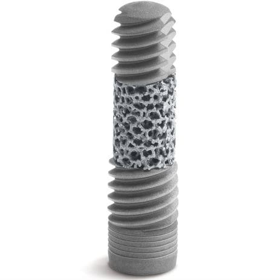

Innovative Implants Surface

New Biomaterials

Future Trends

This page presents new research related to osseointegration. Click on the images below to read more about each topic.
Recent studies have focused on innovative strategies to enhance the interaction between implants and the surrounding bone. In particular, research has highlighted the crucial role of the implant surface. New technologies are advancing beyond traditional treatments that increase surface roughness, incorporating biochemical and nanotechnological approaches. One promising strategy involves the use of biomolecules, such as peptides, which promote cell adhesion and stimulate the regeneration of new bone tissue. Additionally, the growing use of bioactive materials, such as hydroxyapatite, further improves the biocompatibility of implants, ensuring long-term stability.
Traditionally, hydroxyapatite has been the most widely used bioactive material for implant surfaces due to its excellent biocompatibility . This has made it a key material in enhancing implant integration and long-term stability. However, recent studies are exploring alternative materials with improved properties. One area of significant interest is the research on bioglasses , which offer not only bioactivity but also the ability to stimulate bone regeneration by releasing beneficial ions that promote cellular activity. In particular, some studies are investigating a combination of hydroxyapatite and bioglass. This hybrid material appears to enhance osseointegration by leveraging the osteoconductive properties of hydroxyapatite along with the bioactive and osteoinductive capabilities of bioglasses. Moreover, this combination is particularly advantageous for low-temperature sintering processes , making it a promising option for the development of next-generation implants with improved mechanical and biological performance.
Research in biomaterials for osseointegration is still very open and making significant progress. One of the main challenges is the risk of peri-implant infections, which can compromise the success of the implant. Another challenge is the variability in the biological response between patients, influenced by factors such as bone quality or the patient's overall health condition. To address these issues, researchers are investigating smart biomaterials capable of releasing drugs (ex. antibiotics) or growth factors directly at the implant site. Furthermore, nanotechnologies and 3D printing will enable the creation of customized implants, optimized for the specific characteristics of each patient. The direction being pursued is the development of bioactive implants that not only integrate with the bone but also actively stimulate its regeneration.